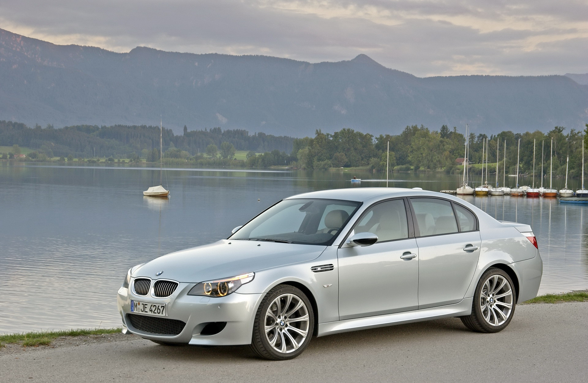

В октябре 1987 года BMW начали производство семейства Е34. По сравнению с Е28, кузов стал более обтекаемым, появились вертикальные указатели поворота спереди, противотуманные фары под бампером. Габариты по сравнению с предыдущей моделью пятой серии ощутимо выросли, а масса автомобиля была снижена. По сравнению с предыдущей моделью пятой серии — BMW E28, восходящей к разработкам начала 1970-х годов — автомобили нового семейства были шагом вперёд. Значительно расширился набор базового и опционального оборудования, повысился общий технический уровень автомобиля. Прогресс имелся и в области безопасностиНастройка ходовой части обеспечивала сочетание комфорта и управляемости (однако, предпочтение отдавалось последнему). Версии с двигателями большого рабочего объёма отличались хорошими динамическими характеристиками, наряду с ними выпускались и экономичные четырёхцилиндровые модификации, обычно с упрощённым оформлением интерьера. Немного тесноватый салон с низкой линией крыши ориентирован на удобство водителя: консоль панели приборов (доступной в чёрном, синем, сером, коричневом, бежевом и красном (очень редком цвете)) развёрнута в его сторону, сидение водителя имеет пять электрорегулировок; всё скомпоновано так, чтобы обеспечить просторную посадку именно на передних сиденьях. Для Е34 была характерна эргономика органов управления. Подвеска при высоком качестве покрытия дискомфорта у пассажиров не вызывает. Двигатель звучит приглушённо даже на высоких оборотах. Обзорность во всех направлениях, кроме заднего, достаточная, назад — затруднённая. В крышке багажного отсека был размещён весьма полный комплект инструмента. Зато все прочие дополнения (кроме АБС фирмы Bosch и подушки безопасности для водителя) предлагались только в опциях. Гидроусилитель рулевого управления развивает полную мощность при маневрировании, а с ростом скорости уменьшает своё действие для повышения точности обратной связи. Тормоза — с мощным замедлением, информативностью, мягко и точно работающей АБС. Пятая серия стала наиболее представительной по набору двигателей в производственной программе компании, которая создала для неё широкий диапазон рядных шестицилиндровых бензиновых силовых агрегатов c впрыском «Бош-Мотроник»: 2,0 л, 129 л. с., шины 195/65 HR15 (модель 520i); 2,5 л, 170 л. с. (525i); 3,0 л, 188 л. с., шины 205/65 VR15 (530i) и 3,4 л, 211 л. с., шины 205/65 VR15 (535i). Их агрегировали с автоматическими 4-диапазонными и 5-ступенчатыми механическими коробками передач. В марте 1988 года появились экономичные (9,3 л/100 км в городе) седаны 524td с турбодизелем мощностью 115 л. с. Топ-модель — седан М5 с двигателем рабочим объёмом 3,6 л (315 л. с.) и увеличенным до 90 л топливным баком — появилась в январе 1989 года и сразу завоевала популярность в кругах любителей быстрой езды. Укомплектованная механической пятиступенчатой коробкой передач, противобуксовочной системой и шинами размерности 235/45 ZR17 спереди и 255/40 ZR17 сзади, она стала самой динамичной в своём классе (разгон до 100 км/ч за 6,3 с, максимальная скорость ограничена — 250 км/ч). В апреле 1992 этот двигатель заменили более мощным 3,8-литровым 327-сильным, а через месяц появилась его 340-сильная версия. В серийной комплектации все машины оборудовали усилителями тормозов. В BMW тех лет имеются два диагностических интерфейса. Самый ранний BMW интерфейс, известный как ADS, представляет собой круглую соединительную колодку с двадцатью контактами. В автомобилях BMW после 1996 года стали появляться стандартные шестнадцатипиновые OBDII колодки. ADS в BMW просуществовал до начала 2000-х годов и отсутствовал в поздних E38
В мае 1990 года начался выпуск седанов 520i и 525i новым двигателем М50 имеющим 24-клапанную головку блока цилиндров, что позволило «снимать» по 150 и 192 л. с. Октябрь 1991 г. ознаменовал появление первой в истории семейства «пятёрок» полноприводной модификации 525iX с 2,5-литровым двигателем (192 л. с.). Она имела более высокую активную безопасность в сравнении с традиционными заднеприводными моделями: она устойчива и не поддаётся не только заносу, но и резкой пробуксовке колёс на сухом асфальте (благодаря противобуксовочной системе), и тем более не позволяет автомобилю сесть в лужу на проселочной дороге. Кроме того в это же время появился новый турбодизель с промежуточным охлаждением — 525tds (143 л. с.), что позволило достигать максимальной скорости более 200 км/ч и при этом средний расход составлял всего 7 л/100 км. С ноября в автосалонах появились бюджетные версии седана — 518i — с тяговитым 113-сильным двигателем, предназначенные в основном для восточноевропейского рынка. В январе 1992 г. полным ходом пошли продажи элегантных универсалов Touring 520i и 525i, которые сохранили все лучшие ездовые качества седанов, а также версии с системой полного привода BMW 525iX Touring. Объём багажного отсека при пяти ездоках составлял 460 л, а с двумя — 1450 л. В сентябре двигатели с индексом М50 (2 и 2,5 литра) стали оснащаться системой изменения фаз газораспределения VANOS, что позволило развивать двигателю большую мощность на низких оборотах, а также снизить расход топлива. С октября 1992 года в продажу поступили седаны и универсалы 530i (218 л. с.) и 286-сильный 540i (вместо 535), оснащённые малошумными высокотехнологичными двигателями V8, а также М5 Touring. Осенью 1992 был проведен небольшой рестайлинг модели — боковые зеркала заднего вида стали более элегантной и современной формы. В апреле 1994 года БМВ 5-й серии получила новую широкую решётку радиатора и новый капот, а также пластиковые накладки на пороги, и вторую подушку безопасности в торпедо. Также в 94-м году у «пятёрки» в базе появились повторители указателя поворотов на передних крыльях. В январе 1993-го на 518i стали устанавливать новый 4-цилиндровый 1,8 л двигатель мощностью 115 л. с. А в апреле 115-сильный 2,4-литровый турбодизель (524td) заменили на 2,5-литровый 143-сильный турбодизель (525tds), агрегатируемый с автоматическими и механическими КП.

BMW 520d
136 л.с. 5МКПП 2.0 л. c 2000 по 2002 xBMW 520i
150 л.с. 5МКПП 2.0 л. c 1997 по 2002BMW 523i
170 л.с. 5МКПП 2.5 л. c 1997 по 2002BMW 525d
163 л.с. 5МКПП 2.5 л. c 2000 по 2002BMW 525tds
143 л.с. 5МКПП 2.5 л. c 1997 по 2002BMW 528i
193 л.с. 5МКПП 2.8 л. c 1997 по 2000BMW 530d
184 л.с. 5МКПП 2.9 л. c 1998 по 2000Модель была представлена общественности в сентябре 1995 года на автосалоне во Франкфурте. Изменения в дизайне по сравнению с предыдущим поколением (BMW E34) были более значительными, чем при предыдущих сменах поколений. В целом кузов стал менее угловатым, фирменные двойные фары были закрыты общим плафоном, окантовка решётки радиатора («ноздри») приобрела более округлую форму. Центральная консоль автомобиля, как и в предыдущих поколениях, немного повёрнута в сторону водителя. За счёт увеличения колёсной базы увеличилось и пространство для задних пассажиров. Подвеска автомобиля почти полностью сделана из алюминия, что хорошо влияет на управляемость автомобиля, уменьшая его вес. В итоге неподрессоренная масса подвески уменьшилась на 36 %. Конструкция задней подвески с «подруливающим» действием задних колёс, улучшает управляемость автомобиля на дороге. Для лучшего распределения веса автомобиля по осям аккумулятор расположили в подполье багажного отделения. Весной 1997 года увидел свет универсал Touring, который на 90 мм длиннее седана и на 100 кг тяжелее. Гамма двигателей полностью идентична седану, а список стандартного оснащения был дополнен двумя боковыми подушками безопасности. В 1998 году началось производство BMW M5. На этот автомобиль устанавливали форсированный 5-литровый двигатель V8 S62, конструктивно схожий с серийным 4,4-литровым агрегатом M62B44, оборудованный системой Double-VANOS и восемью индивидуальными дроссельными заслонками. Впервые на серийной модели BMW мощность двигателя достигла 400 л.с. Но в отличие от BMW E34, не появилось M-универсала на базе E39. Единственный в мире официальный BMW M5 E39 touring заказал глава BMW M GmbH. В 1999 году модель получила часть конструктивных изменений, которые коснулись двигателей, и не повлияли на дизайн автомобиля. Основные изменения заключались в том, что 6-цилиндровые моторы получили управление обоими распределительными валами системы Double-VANOS, 8-цилиндровые — систему VANOS для впускных клапанов и двухступенчатые каталитические нейтрализаторы отработанных газов, позволившие удовлетворить требованиям Euro 4 2005 года. В том же 1999 году появился 184-сильный дизель с неразделённой камерой сгорания, системой впрыска Common Rail, турбонаддувом и промежуточным охлаждением воздуха на модели BMW 530d. Автомобиль способен развивать 225 км/ч и расходовать в стандартном загородном цикле менее 6 л/100 км[источник не указан 2595 дней]. В конце 1999 года на российских дорогах появились первые автомобили BMW E39, собранные на предприятии АО «Автотор» в Калининградской области. В начале 2000 года появилась недорогая BMW 520d с 2-литровым 4-цилиндровым дизелем непосредственного впрыска. Более мощная BMW 525d заменила предшественницу 525tds с предкамерным 143-сильным дизелем. Новый 2,5-литровый 6-цилиндровый дизель непосредственного впрыска с турбонаддувом оснащён системой топливоподачи Common Rail и развивает 163 л.с. В сентябре 2000 года BMW E39 претерпела рестайлинг. Внешне обновлённую пятёрку можно легко узнать по оригинальной светотехнике выполненной по технологии CELIS, бамперам и более округлым зеркалам. Однако главные изменения скрыты внутри — здесь появились сразу три новых двигателя M54 для моделей BMW 520i, 525i и 530i. Все они рядные, 6-цилиндровые, с системой Double-VANOS. Первый двигатель для BMW 520i, создан на базе старого 2-литрового агрегата. Увеличение хода поршня с 66 до 72 мм, позволило увеличить рабочий объём с 1991 до 2171 см³ и максимальную мощность со 151 до 170 л.с. при 6250 об/мин. Второй двигатель — это прежний 2,5-литровый агрегат модели BMW 523i, но в модернизированном варианте развивающий уже не 170, а 192 л.с. (индекс 523i заменили на правильный 525i). Третий двигатель для BMW 530i, впервые, в середине 2000 года, появился на моделях 3-й серии — это 3-литровый двигатель с внушительной мощностью в 231 л.с. К конструктивным особенностям модели относят гидронаполненные сайлентблоки, которые лучше гасят вибрации, но достаточно быстро изнашиваются. Модель выпускалась до 2003 года, когда её сменила BMW E60. Универсалы выпускались до 2004 года.

BMW 520d
163 л.с. 6АКПП 2.0 л. c 2007 по 2007BMW 520d
177 л.с. 6АКПП 2.0 л. c 2007BMW 520i
170 л.с. 6АКПП 2.2 л. c 2007BMW 523i
190 л.с. 6МКПП 2.5 л. c 2007BMW 525d
197 л.с. 6АКПП 2.5 л. c 2007BMW 525i
218 л.с. 6АКПП 2.5 л. c 2007BMW 530d
235 л.с. 6МКПП 3.0 л. c 2007BMW 530i
272 л.с. 6АКПП 3.0 л. c 2007BMW 535d
286 л.с. 6АКПП 3.0 л. c 2007BMW E60 модификация кузова BMW «пятой» серии, который выпускался с 2003 года по 2009 год (до 2010 года выпускался в кузове универсал). Предшественником данного кузова был BMW E39. Для 2003 года базовой моделью в семействе являлась модель 520i с 6-цилиндровым M54B22 двигателем объемом 2,2 литра выдаёт 170 л. с. В 2007 году произошёл рестайлинг, появился электронный селектор автомата, новые фары, светодиодные фонари, бампера, кнопка старта двигателя, c марта 2008 года появилась возможность добавление в опции расширенной мультимедиа CIC (Car Information Computer). Также добавились 3.0-литровые дизельные с одной турбиной двигатель 235 л. с и двигатель с двумя турбинами мощностью 286 л. с. Базовой в семействе являлась модель 520i. Её 4-цилиндровый двигатель объемом 2,0 литра выдаёт 170 л. с. Автомобиль был доступен в двух кузовах: седан (E60) и универсал (E61). На версию M5 устанавливался двигатель S85B50 (V10) объёмом 5 литров и выдающий 507 л. с., что позволяет автомобилю разгоняться от 0 до 100 км/ч за 4,7 секунды, а до 200 км/ч — за 15 секунд. Максимальная скорость ограничивается электроникой на уровне 250 км/ч. Без ограничителя машина способна разогнаться до 320 км/ч. Последняя машина сошла с конвейера в 2009 году. В декабре 2009 года цех производства E60 был закрыт на переоборудование для производства новой модели F10.
За период с 2003 по 2009 годы компанией было реализовано 1 096 444 седана и 263 426 универсалов.
Системы помощи водителю Проекционный дисплей информация (HUD) проецируется на лобовое стекло с отображением скорость, оборотов двигателя и маршрута. В качестве специального оборудования также был доступен BMW Night Vision ( Night View Assist ). В отличие от Mercedes-Benz S-Class (где используется система ближнего инфракрасного диапазона от Bosch с активным инфракрасным освещением), BMW использует технологию пассивного тепловидения. Тепловое излучение от предметов и людей регистрируется камерой в решётке переднего бампера и отображается на дисплее iDrive.
Контроль полосы (на скорости выше 70 км/ч) - эта система предупреждает водителя, если он собирается покинуть полосу движения, вибрируя рулевое колесо. Камера во лобовом стекле обнаруживает существующую и четко видимую разметку полосы движения. Если дорожная разметка распознается, система сигнализирует о готовности предупредить. Систему можно включить или выключить с помощью кнопки на рулевом колесе. В ситуациях где маркировка полос движения бывает неразборчивой, система автоматически переключается в неактивное состояние, а затем автоматически активируется.
Светотехника BMW E60 имеет автоматический дальний свет и адаптивные фары поворотов. С осени 2007 года - светодиодные фонари поворотов и задние фонари. Ассистент дальнего света, как дополнительная опция, автоматически включает или выключает дальний свет, предотвращая ослепление встречных автомобилей. С марта 2005 года ксеноновые фары были заменены с D2S на D1S.
Мультимедиа Для E60 есть различные варианты развлечений, например, профессиональная навигационная система с 8,8-дюймовым экраном и DVD приводом. Тюнер для цифрового радио приема и DVB-T - тюнер для телевизионного приема также доступны. Были доступны 4 вида аудиосистем Stereo, Hi-Fi, Logic7 и Individual.
Аудио может воспроизводиться через опциональную аудиосистему LOGIC7 от harman / kardon с 13 динамиками, включая два сабвуфера под передними сиденьями; он обеспечивает воспроизведение без искажений до 110 дБ. Система использует звуковую сцену на 360 °, а также поддерживает MP3. К усилителю (девять каналов, 420Ватт ) сигнал передается через интерфейс оптической шины MOST. Кроме того, с 2007 года появилась возможность заказа опции аудиосистемы Individual с 16 динамиками и мощностью 825 Вт.
Рестайлинг 2007 - 2010 г. в24 марта 2007 года была представлена доработанная версия 5-й серии. Внешний вид немного переработан. Наиболее заметными внешними изменениями являются новые бамперы, задние фонари со светодиодной технологией, переработанные противотуманные фары, измененная рамка номерного знака в задней двери.
В интерьере были переработаны дверные панели и выбраны другие материалы. Органы управления имеют перламутровый хромированный дизайн, а обновленный iDrive теперь имеет восемь свободно программируемых любимых кнопок. Самым ярким сигналом к новому стилю оформления интерьера являются двухцветные дверные панели. Кнопки стеклоподъемников и регулировки зеркал теперь встроены в подлокотник.
Технические нововведения включали дополнительное предупреждение о выезде с полосы движения, дневные ходовые огни через коронирующие кольца, огни поворота и 6-ступенчатую спортивную автоматическую коробку передач, которая может переключать до четырех передач одновременно. Это включало новый рычаг селектора и подрулевые переключатели на рулевом колесе. Также существует доработанная гамма двигателей. Помимо изменений в характеристиках, все бензиновые двигатели, кроме версии V8, были переведены на прямой впрыск.
Как опция предлагалась с марта 2008 года (с октября 2008 ставилась как замена ССС) система навигации с жестким диском CIC была поставлена с новой системой управления iDrive и может воспроизводить фильмы DVD, когда она неподвижна. Монитор имеет разрешение 1280х480. Данные могут быть перенесены на внутренний жесткий диск через порт USB в перчаточном ящике; 12 ГБ из 80 ГБ зарезервированы для музыки. В сентябре 2009 года 5-я серия получила модифицированные наружные зеркала заднего вида для соответствия новым директивам ЕС.

BMW 520d
184 л.с. 8АКПП 2.0 л. c 2010 по 2013BMW 530i
204 л.с. 8АКПП 3.0 л.c 2010 по 2013BMW 525d
204 л.с. 8АКПП 3.0 л. c 2010 по 2013BMW 528i
258 л.с. 8АКПП 3.0 л. c 2010 по 2013BMW 530d
245 л.с. 6МКПП 3.0 л. c 2010 по 2013BMW 535d
300 л.с. 8АКПП 3.0 л. c 2010 по 2013BMW 535i
306 л.с. 8АКПП 3.0 л. c 2010 по 2013BMW F10
шестое поколение BMW «пятой» серии, которое было представлено 23 ноября 2009 и выпускается с 6 января 2010 года[1]. Вариант в кузове универсал (Touring) имеет обозначение F11, а лифтбэк — F07. Это поколение пришло на смену кузовам BMW E60/BMW E61. Для Китая была разработана длиннобазная версия, которую было решено также продавать в Мексике и на Ближнем Востоке; такая версия имеет индекс F18.
Технические особенности
По сравнению с предыдущей моделью в F10 внесено множество усовершенствований. В частности, в передней подвеске теперь применяются сдвоенные поперечные рычаги (сходная конструкция используются на BMW 7-й серии), задняя подвеска многорычажная. По состоянию на середину 2012 года данная модель в СНГ предлагается с восемью вариантами двигателей. Бензиновые двигатели включают в себя 4.4-литровый V8 твин-турбо мотор N63, 3-литровый турбированный двигатель N55, и два варианта 2-литровых двигателей N20 разной мощности. Дизельные двигатели предлагаются в четырёх разновидностях — два 3-литровых рядных шестицилиндровых мотора N57 разной мощности и двухлитровый рядный четырёхцилиндровый двигатель N47 в двух модификациях. Коробки передач предлагаются в двух вариантах — шестиступенчатая ручная коробка либо восьмиступенчатая автоматическая ZF 8HP.
Дизайн
Экстерьер машины был разработан Яцеком Фролихом. Автомобиль выполнен в новом корпоративном стиле BMW — теперь «пятёрка» своим дизайном напоминает BMW 7-й серии в кузове F01/F02 или рестайлинговую BMW 3-ей серии. Внешне автомобиль стал более традиционно похож на автомобили BMW по сравнению с E60. Также по сравнению с предыдущим поколением кузов F10 увеличился на 58 мм в длину и на 14 мм в ширину (что неудивительно, учитывая, что автомобиль построен на платформе BMW 7 серии F01), но при этом стал на 18 мм ниже.
BMW 5 ActiveHybrid Concept
На международном автомобильном салоне 2010 года в Женеве, BMW представила концептуальный гибрид на основе BMW 5. Тягу на колеса передаёт восьмиступенчатая коробка автомат с двойным сцеплением. В автомобиле используется трёхлитровый двигатель L6 с турбонаддувом, работающий в паре с электромотором мощностью 40 кВт. В концепте реализованы возможности заранее подстраиваться под будущий режим вождения, используя данные бортовых систем и навигатора. На спуске блок управления может заглушить двигатель и задействовать электромотор для зарядки аккумуляторов, используя систему торможения. Концептуальный гибрид в среднем на 10 % экономичнее BMW 535i.
BMW 520d
190 л.с. 8АКПП 2.0 л. c 2016BMW 530d
265 л.с. 8АКПП 3.0 л. c 2016BMW 530i
252 л.с. 8АКПП 2.0 л. c 2016BMW 540i
340 л.с. 8АКПП 3.0 л. c 2016BMW G30
седьмое поколение легковых автомобилей немецкой марки BMW 5 серии в кузове G30. Представлено публике в октябре 2016 года и является преемником поколения F10[2]. Автомобиль построен на одной платформе с BMW 7 серии поколения G11, поэтому новая модель прибавила в габаритах. Также она похожа внешне на флагман компании BMW. В феврале 2017 года была представлена версия в кузове универсал (внутренний индекс G31)[3]. Существует также версия с удлинённой колёсной базой специально для китайского рынка под индексом G38. В 2020 году произошёл рестайлинг модели. Продажи BMW G30 начались в феврале 2017 года.более подробная информаци по ссылке внизу
подробная информация